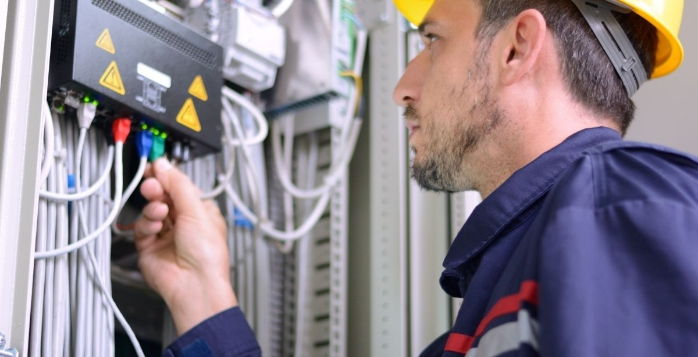
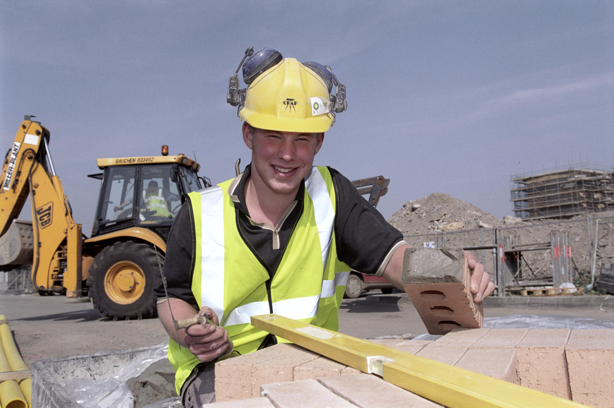
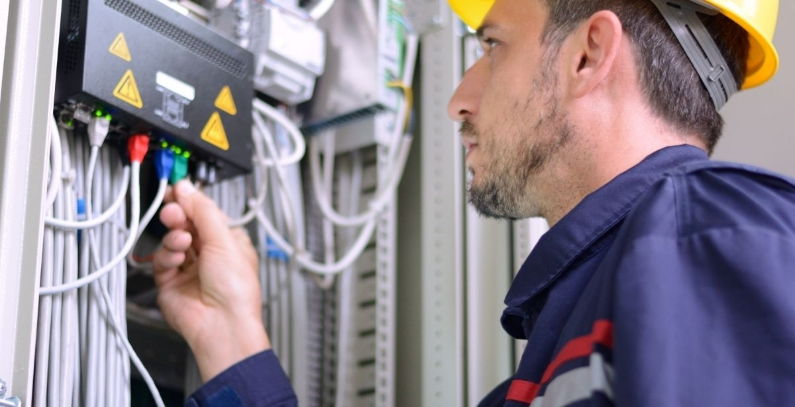
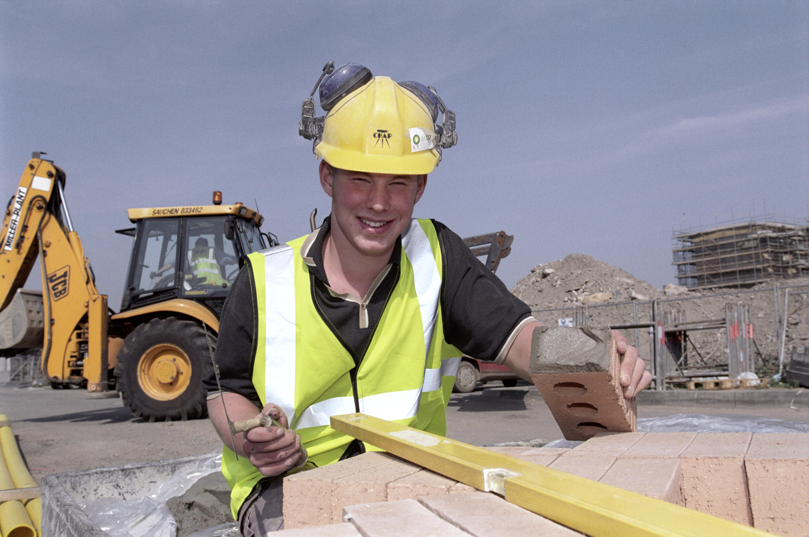

PT. Agung Tetradahayu Teknik berdiri sejak 7 Juli 2021 di kota Balikpapan. Merupakan perusahaan yang bergerak dibidang mechanical & electrical contractor dan general trading
Aktivitas dalam bidang electrical menjadi motor pengerak utama dalam PT. Agung Tetradahayu Teknik. Namun dalam upaya memenuhi kebutuhan pasar dalam era globalisasi yang terus berkembang secara kompleks dan saling berhubungan, PT. Agung Tetradahayu Teknik kini mengembangkan bisnis, perdagangan dengan berbagai komoditas.
PT. Agung Tetradahayu Teknik berharap dapat mampu menghadapi dinamika bisnis dan dapat menumbuhkan optimisme untuk menciptakan peluang untuk terus bertumbuh. Terus melakukan inovasi dan peningkatan kemampuan sumber daya manusia yang dimiliki. Dengan segenap sumber daya yang dimiliki, serta kerjasama dengan seluruh pihak terkait, bersama- sama PT. Agung Tetradahayu Teknik siap menghadapi tantangan masa yang akan datang dengan memperkuat dan mengoptimalkan bisnis yang telah berjalan.
 



Karena kami merupakan perusahaan yang bergerak dibidang procurement dan engineering, dengan tenaga kerja yang profesional dan berpengalaman dibidangnya. Dan, kami konsisten untuk mengutamakan pelayanan dan hasil dengan kualitas yang terbaik, guna menjamin kepuasan client. Selain itu, kami juga melayani dari hati dengan integritas, sehingga kami siap untuk mewujudkan kebutuhan pelanggan sesuai dengan motto kami yaitu “We Give Better Sensibility"